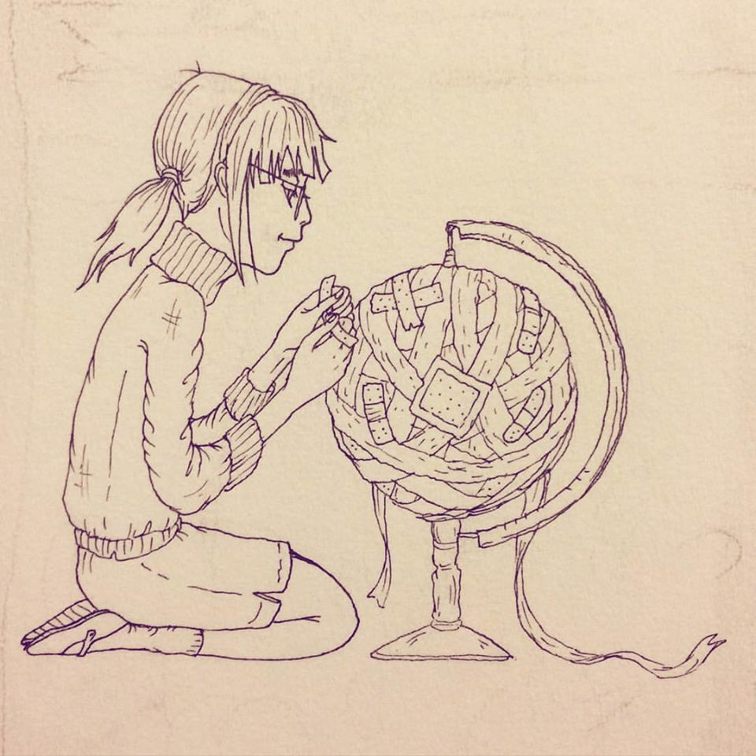
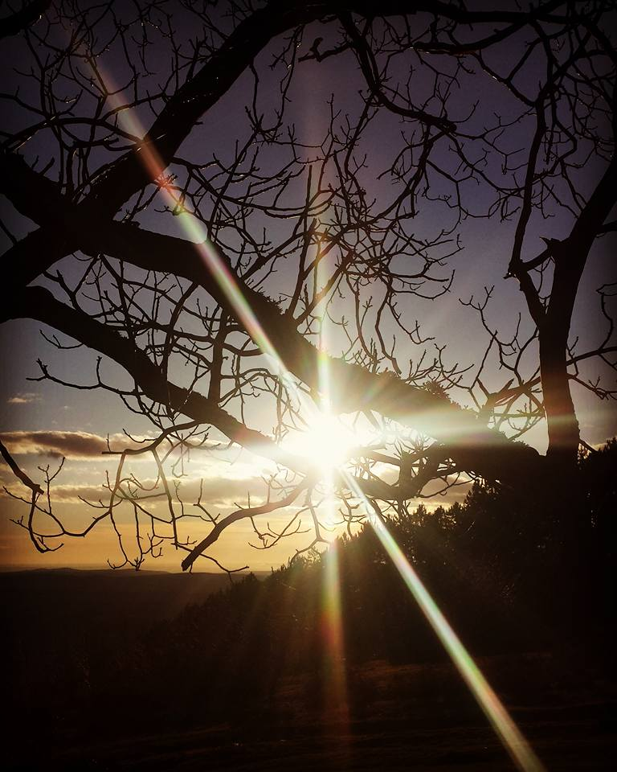
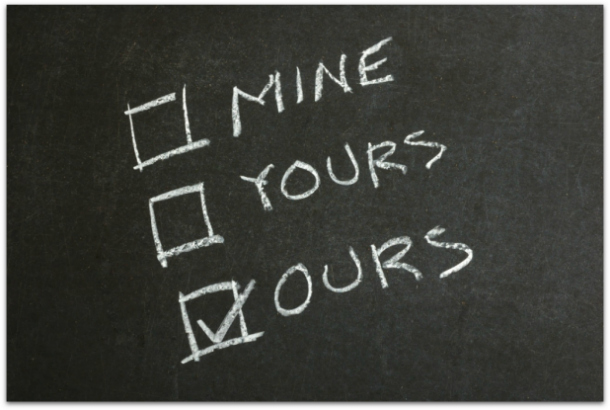

What is Fear? Fear Itself Is Undefined... by Bianca Flores
I lay on my bed soaking my pillow with my tears,
I try to remember exactly what it is that I fear.
Is it the passing of time or the love that I lack?
Is it the mistakes that I've made or the fact that I can't bring the past back?
What is it that I'm afraid of? Why am I so scared?
Is it the people I've hurt or the people that have hurt me?
Am I afraid of everything that I cant seem to see?
Is it the love of a friend, or the loss of my family?
Is it the possibility that my life can end in a tragedy?
What is it that I fear most? What do my eyes say I'm scared of?
Is it the sun that sets but won't seem to rise?
Is it the hope that I have that always seems to die?
Is it the trust of a person that I cannot begin to grasp?
Is it all the memories of my horrid past?Is it me?
Can it possibly be that the thing I fear most is the thing I can't be?
The things that I try to understand?
The me that I try to be with when I'm feeling sad?
The person I'm expected to be? Is that what I fear?
. . . I think the thing I fear most . . .is me

Thank You for Your Presence by Agnes Andreea
You're in every sunset, you're in every sunrise.
You're in every tree I see...
You're in the waves and in every breeze I feel upon my skin.
You're in the stars that light up the sky in the night.
You're in the clouds. Oh, beautiful clouds!
You're in the moon and in the ocean, in the sea and in the mountains.
You're in every person around me.
You're in the autumn and in every colorful image.
You're in the darkest place and in the brightest one, too.
You're in every city I will get to go to and in every place I will never be able to visit.
You're in every song I hear and in every song unwritten.
You're in the silence of my room and in a room filled up with people.
You're in a book without an end.
You're everywhere, you're in everything and you will always be.

The Cookie Thief by Valerie Cox
A woman was waiting at an airport one night
With several long hours before her flight
She hunted for a book in the airport shop
Bought a bag of cookies and found a place to drop
She was engrossed in her book but happened to see
That the man beside her as bold as could be
Grabbed a cookie or two from the bag between
Which she tried to ignore to avoid a scene
She munched cookies and watched the clock
As this gutsy cookie thief diminished her stock
She was getting more irritated as the minutes ticked by
Thinking If I wasn't so nice I'd blacken his eye
With each cookie she took he took one too
And when only one was left she wondered what he'd do
With a smile on his face and a nervous laugh
He took the last cookie and broke it in half
He offered her half as he ate the other
She snatched it from him and thought
Oh brother
This guy has some nerve and he's also rude
Why he didn't even show any gratitude
She had never known when she had been so galled
And sighed with relief when her flight was called
She gathered her belongings and headed for the gate
Refusing to look back at the thieving ingrate
She boarded the plane and sank in her seat
Then sought her book which was almost complete
As she reached in her baggage she gasped with surprise
There was her bag of cookies in front of her eyes
If mine are here
she moaned with despair
Then the others were his and he tried to share
Too late to apologize she realized with grief
That she was the rude one, the ingrate, the thief.
